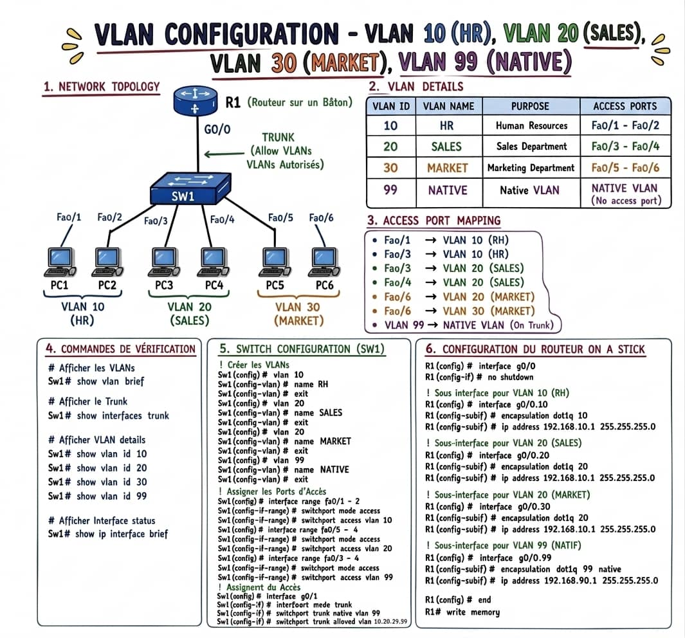
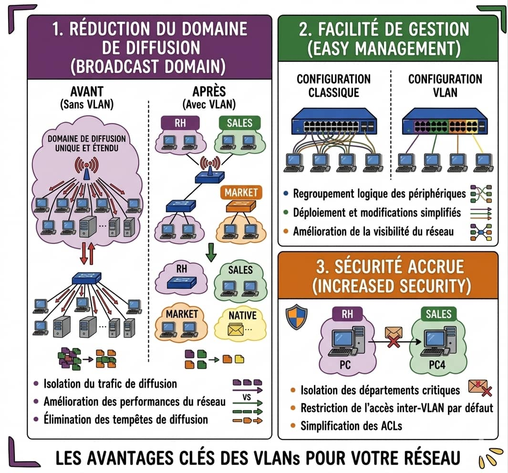
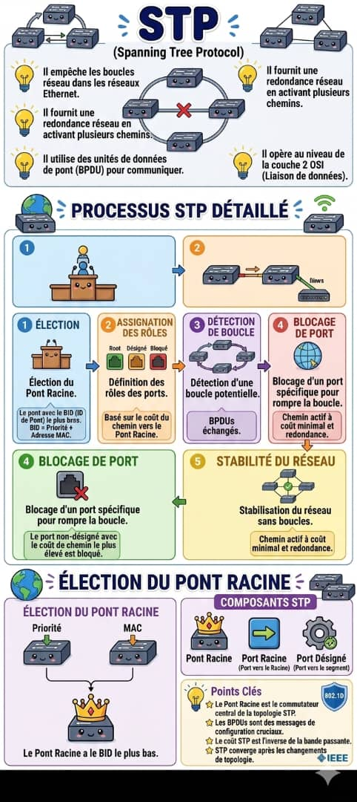
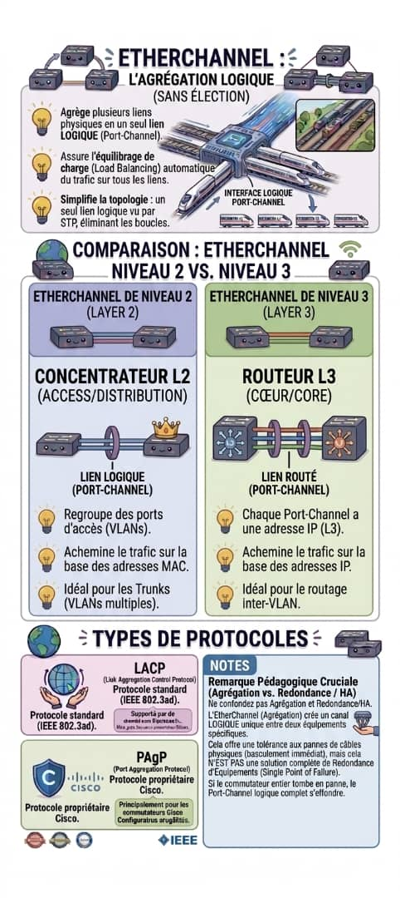
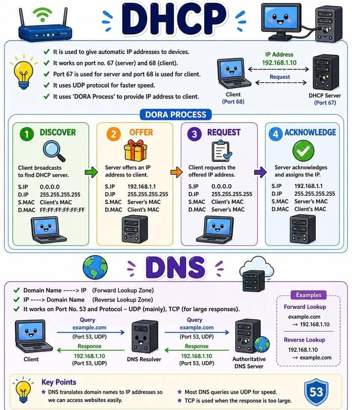
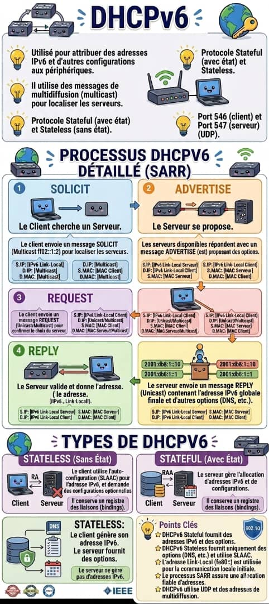

Ton parcours complet d'administration réseau — de la théorie aux scénarios réels
🎓 Compétences admin réseau, système & cybersécurité
Objectif : maîtriser la couche 2–3, les services IP et les contrôles de sécurité demandés en entreprise — avec la logique de dépannage d'un professionnel.
| Domaine | Contenu du cours | En production |
|---|---|---|
| Réseau | VLAN, 802.1Q, inter-VLAN, STP/RSTP, LACP | Segmentation, redondance sans boucle |
| Services | DHCP, relay, DHCPv6, DNS | Onboarding, résolution de noms |
| Cyber | Port Security, Snooping, DAI, durcissement IOS | MitM, rogue DHCP, accès non autorisés |
| Opérations | Modèle OSI, commandes show, scénarios | MTTR court, logs corrélés (NTP) |
copy running-config startup-config), horloge synchronisée (NTP) avant analyse des logs.
Segmentation logique du réseau pour plus de performance, sécurité et gestion
🤔 C'est quoi un VLAN ?
Un VLAN (Virtual Local Area Network) est un réseau logiqueUn réseau qui n'est pas physiquement séparé, mais isolé par configuration logicielle du switch. créé à partir d'un réseau physique. Il permet de segmenter les équipements indépendamment de leur emplacement physique.
Réduction Broadcast
Chaque VLAN = 1 domaine de broadcast. Plus de tempêtes de diffusion dans tout le réseau !
Sécurité
HR ne peut pas communiquer directement avec SALES — isolation par défaut entre VLANs !
Performance
Trafic limité au VLAN concerné → moins de congestion → meilleure bande passante !
📋 Types de ports VLAN
| Type de Port | Rôle | Trafic | Utilisation |
|---|---|---|---|
| Access Port | Un seul VLAN | Non tagué | PC, imprimante, téléphone |
| Trunk Port | Plusieurs VLANs | Tagué 802.1Q | Switch-Switch, Switch-Routeur |
| Voice Port | Data + Voix | 2 VLANs | IP Phone |
| Native VLAN | Trafic non tagué sur trunk | Sans tag | Gestion, VLAN 99 |
Access = 1 VLAN = 1 machine
Trunk = plusieurs VLANs = switch à switch
Native = non tagué sur trunk (VLAN 99 conseillé)
📐 Plages VLAN & modèle 3 couches
| Plage | Usage pro |
|---|---|
| 1 | VLAN par défaut — ne pas y placer les postes utilisateurs |
| 2–1001 | VLANs métier (HR, invités, serveurs…) — documentés dans un registre |
| 1006–4094 | VLANs étendus : DMZ, stockage, management, labo |
Access (postes) → Distribution (agrégation, politiques) → Core (haut débit). Le routage inter-VLAN se fait en distribution/core sur équipement L3.
⚙️ Configuration complète SW1
switchport trunk encapsulation dot1q AVANT switchport mode trunk. Sur les switches L2, ce n'est pas nécessaire.✅ Commandes de Vérification
show vlan brief # Tous les VLANs show vlan id 10 # VLAN spécifique show interfaces trunk # Ports trunk show interfaces fa0/1 switchport # Détail port show running-config # Config complète
❌ Erreurs Fréquentes
Oublier de créer le VLAN avant d'assigner un port → port reste dans VLAN 1
Native VLAN différent des 2 côtés du trunk → CDP warning + sécurité
Ne pas autoriser les VLANs sur le trunk → trafic bloqué
🔌 Le Trunk 802.1Q — Comment ça marche ?
VLAN 10
Tag 802.1Q
G0/1
Sub-IF
📖 Structure d'une trame 802.1Q
Trame Ethernet normale :
[DA MAC | SA MAC | EtherType | Data | FCS]
Trame 802.1Q (avec tag inséré) :
[DA MAC | SA MAC | 0x8100 | PCP | DEI | VLAN ID (12 bits) | EtherType | Data | FCS]
💡 Le VLAN ID sur 12 bits → max 4094 VLANs possibles (1-4094, 0 et 4095 réservés)
🔀 Inter-VLAN Routing — Router-on-a-Stick
Par défaut, les VLANs s'ignorent ! Pour qu'ils communiquent, il faut un routeur. La méthode Router-on-a-Stick utilise un seul port physique avec des sous-interfaces (sub-interfaces).
encapsulation dot1q [ID] !
⚡ Routage inter-VLAN sur switch L3 (SVI)
En entreprise, le switch multilayer remplace souvent le routeur externe : chaque VLAN a une SVI (interface vlan X) qui sert de passerelle.
ip routing interface vlan 10 ip address 192.168.10.1 255.255.255.0 no shutdown # show ip route connected | show ip interface brief
Router-on-a-Stick = labo / PME. SVI = campus et datacenter (meilleure latence, moins de sauts).
🛡️ Sécurité VLAN
Un attaquant configure son PC pour se faire passer pour un switch et négocie un trunk DTP → accès à TOUS les VLANs !
switchport nonegotiate et forcer le mode access.
# Sur TOUS les ports access : SW(config-if)# switchport mode access SW(config-if)# switchport nonegotiate SW(config-if)# switchport access vlan 10
L'attaquant envoie une trame avec 2 tags 802.1Q — le switch retire le premier tag (native VLAN) et forward le 2ème vers un autre VLAN !
1. Changer le Native VLAN (pas VLAN 1)
2. Désactiver les ports inutilisés →
shutdown + VLAN black-hole3. Activer Port Security pour limiter les MAC addresses
4. Activer DHCP Snooping pour prévenir les faux serveurs DHCP
5. Storm-control sur les trunks : limiter broadcast/multicast/unicast inconnu
6. VLAN de management dédié (SSH uniquement depuis IP autorisées)
🔧 Dépannage VLAN — Réflexes Admin
Vérifier les VLANs existants
show vlan brief → VLAN 10 et 20 bien créés et actifs ?
Vérifier l'assignation des ports
show interfaces fa0/1 switchport → Port bien en mode access VLAN 10 ?
Vérifier le trunk
show interfaces trunk → VLAN 10 et 20 bien autorisés sur le trunk ?
Vérifier le routeur
show ip route sur R1 → Routes vers 192.168.10.0/24 et 192.168.20.0/24 présentes ?
Vérifier les IP des PCs
PC1 a bien 192.168.10.x/24 avec gateway 192.168.10.1 ? PC3 a 192.168.20.x/24 ?
Couche 1 → Couche 2 → Couche 3
Câble OK → VLAN/Trunk OK → IP/Route OK
Toujours commencer par le bas du modèle OSI !
🛠️ Commandes terrain
show interfaces status show mac address-table vlan 10 show spanning-tree interface g0/1 show ip interface brief # Depuis switch L3 : ping avec source VLAN ping 192.168.20.1 source vlan 10
Éviter les boucles réseau tout en gardant la redondance
🤔 Pourquoi STP existe ?
Sans STP, si tu as des liens redondants entre switches → BOUCLE INFINIE ! Les trames tournent en rond → broadcast storm → réseau down. STP résout ça en désactivant logiquement certains ports.
| État du Port | Reçoit BPDU | Envoie BPDU | Apprend MAC | Forward Data | Durée (STP) |
|---|---|---|---|---|---|
| 🔴 Blocking | ✅ | ❌ | ❌ | ❌ | 20 sec max |
| 🟡 Listening | ✅ | ✅ | ❌ | ❌ | 15 sec |
| 🟠 Learning | ✅ | ✅ | ✅ | ❌ | 15 sec |
| 🟢 Forwarding | ✅ | ✅ | ✅ | ✅ | Normal |
| ⚫ Disabled | ❌ | ❌ | ❌ | ❌ | Admin shutdown |
👑 Élection du Root Bridge
🔢 Structure du BID (8 octets)
BID = Priority (2 octets) + MAC Address (6 octets)
Priority par défaut : 32768
Priority = valeur configurée + VLAN ID (PVST+)
Ex: priority 32768 + VLAN 10 = BID priority 32778
⚡ À priorité égale → le plus petit MAC address gagne !
Tous les switches se proclament Root Bridge
Au démarrage, chaque switch envoie des BPDUs en se déclarant Root. BID = sa propre priorité + MAC.
Comparaison des BIDs
À réception d'un BPDU avec un meilleur BID (plus bas), le switch adopte l'autre comme Root Bridge.
Seul le Root Bridge envoie des BPDUs
Les autres switches ne font que relayer les BPDUs du Root Bridge vers les autres.
spanning-tree vlan 10 priority 4096 (multiple de 4096 !)| Vitesse lien | Coût STP |
|---|---|
| 10 Gbps | 2 |
| 1 Gbps | 4 |
| 100 Mbps | 19 |
| 10 Mbps | 100 |
Élection du Root Port : plus petit coût de chemin vers le Root. Égalité → plus petit BID du voisin, puis plus petit port ID.
⚙️ Configuration STP
Un attaquant peut connecter un switch avec une priorité basse → il devient Root Bridge → reconfiguration de tout STP → DoS ou man-in-the-middle !
⚡ RSTP (802.1w) — Rapid Spanning Tree
😴 STP Classique (802.1D)
- ⏱️ Convergence : ~50 secondes
- 5 états de port (Blocking, Listening, Learning, Forwarding, Disabled)
- Seulement le Root Bridge génère des BPDUs
- Réagit lentement aux pannes
⚡ RSTP (802.1w)
- ⚡ Convergence : < 1 seconde !
- 3 états actifs : Discarding, Learning, Forwarding
- Tous les switches génèrent des BPDUs (hello 2s)
- Proposition/Accord rapide entre switches
| Rôle RSTP | Fonction |
|---|---|
| Root | Port vers le Root Bridge (1 par switch) |
| Designated | Port qui forward sur un segment (émet des BPDUs) |
| Alternate | Backup du Root Port — bloqué, prêt en <1 s |
| Backup | Backup d'un Designated sur segment partagé |
spanning-tree portfast + spanning-tree bpduguard enable (ou global spanning-tree portfast bpduguard default). Sur uplinks : spanning-tree guard root pour empêcher un switch access de devenir Root.# Changer STP mode : SW(config)# spanning-tree mode rapid-pvst # Vérifier : SW# show spanning-tree | include mode
Agrégation de liens pour plus de bande passante et redondance
🔗 C'est quoi l'EtherChannel ?
L'EtherChannel regroupe jusqu'à 8 liens physiques en un seul lien logique (Port-Channel). Résultat : plus de bande passante + redondance si un lien tombe !
4x1Gbps = 4Gbps
🔵 EtherChannel L2
- 📍 Pour switches Access/Distribution
- 📦 Regroupe des ports d'accès (VLANs)
- 📡 Basé sur adresses MAC
- 🔌 Idéal pour les trunks multi-VLAN
🟢 EtherChannel L3
- 📍 Pour les switches Core/Distribution L3
- 🌐 Chaque Port-Channel a une IP
- 🚀 Basé sur adresses IP
- 🔀 Idéal pour le routage inter-VLAN
⚙️ LACP vs PAgP
🌍 LACP (802.3ad)
- ✅ Standard IEEE → multi-vendor
- 🔄 Active : initie la négociation
- ⏳ Passive : attend la négociation
- Active-Active ✅ | Active-Passive ✅
- Passive-Passive ❌ (aucun n'initie)
- Max 16 liens (8 actifs + 8 standby)
🔒 PAgP (Port Aggregation Protocol)
- ⚠️ Propriétaire Cisco uniquement
- 🔄 Desirable : initie la négociation
- ⏳ Auto : attend la négociation
- Desirable-Desirable ✅ | Desirable-Auto ✅
- Auto-Auto ❌ (aucun n'initie)
- Max 8 liens par Port-Channel
| Protocole | Mode SW1 | Mode SW2 | Résultat |
|---|---|---|---|
| LACP | Active | Active | ✅ EtherChannel formé |
| LACP | Active | Passive | ✅ EtherChannel formé |
| LACP | Passive | Passive | ❌ Pas d'EtherChannel |
| PAgP | Desirable | Desirable | ✅ EtherChannel formé |
| PAgP | Desirable | Auto | ✅ EtherChannel formé |
| PAgP | Auto | Auto | ❌ Pas d'EtherChannel |
| Manuel | On | On | ✅ Forcé (sans négociation) |
port-channel load-balance). Plusieurs flux peuvent utiliser des liens différents ; un seul gros flux ne dépasse jamais la vitesse d'un membre (ex. 1 Gbps sur Po1 à 4×1G).💻 Configuration EtherChannel
🛡️ Sécurité EtherChannel
Si un port EtherChannel est mal configuré, STP peut créer des loops car il voit les liens individuels au lieu du Port-Channel logique.
show etherchannel summary — chercher le flag (P) = in Port-channel.show etherchannel summary :P = Port dans le channel ✅
I = Stand-alone (problème!) ❌
D = Down ❌
s = Suspended ❌
Attribution automatique d'adresses IP via le processus DORA
🎯 Le Processus DORA
📊 Détail des messages DHCP
DISCOVER : S.IP=0.0.0.0 | D.IP=255.255.255.255 | S.MAC=Client | D.MAC=FF:FF:FF:FF:FF:FF
OFFER : S.IP=192.168.1.1 | D.IP=255.255.255.255 | S.MAC=Serveur | D.MAC=Client
REQUEST : S.IP=0.0.0.0 | D.IP=255.255.255.255 | S.MAC=Client | D.MAC=Serveur
ACK : S.IP=192.168.1.1 | D.IP=255.255.255.255 | S.MAC=Serveur | D.MAC=Client
💡 Protocole : UDP | Port serveur : 67 | Port client : 68
DISCOVER : le client ne connaît pas encore l'IP du serveur → broadcast obligatoire.
REQUEST : plusieurs serveurs peuvent avoir répondu → le client broadcaste pour que TOUS les serveurs sachent qu'il a choisi le premier qui a répondu (les autres retirent l'offre).
| Option DHCP | Code | Usage admin |
|---|---|---|
| Subnet Mask | 1 | Masque réseau |
| Router | 3 | Passerelle par défaut |
| DNS Server | 6 | Résolveurs internes / secours |
| Domain Name | 15 | Suffixe DNS (Active Directory) |
| Lease Time | 51 | Durée du bail |
| TFTP / Bootfile | 66–67 | PXE, déploiement d'images |
show ip dhcp binding et show ip dhcp conflict.⚙️ Configuration Serveur DHCP sur Cisco IOS
📡 DHCP Relay Agent (ip helper-address)
VLAN 10
Relay Agent
192.168.1.10
ip helper-address ne fait pas que relayer DHCP — il relaie aussi d'autres services broadcast (TFTP, NetBIOS, Time...). Pour limiter à DHCP uniquement → voir ip forward-protocol udp.
🛡️ Sécurité DHCP
Phase 1 — Starvation : L'attaquant envoie des milliers de DISCOVER avec des MACs spoofés → le pool DHCP légitime se vide → plus d'adresses disponibles.
Phase 2 — Rogue Server : L'attaquant lance son propre serveur DHCP → distribue de fausses IPs avec lui comme gateway → Man-in-the-Middle !
Stateful, Stateless, SLAAC — le processus SARR expliqué
🔄 Le Processus SARR (DHCPv6 Stateful)
• DHCPv6 utilise le multicast (ff02::1:2) — pas le broadcast (IPv6 n'a pas de broadcast !)
• Ports : 546 (client) et 547 (serveur) UDP
• La Link-Local address (fe80::) est utilisée pour la communication initiale
📊 Stateful vs Stateless vs SLAAC
🔴 Stateful DHCPv6
- ✅ Serveur gère les adresses
- ✅ Gère aussi DNS, domaine...
- ✅ Registre des liaisons (bindings)
- ⚙️ Processus SARR complet
- 🔧 Similaire au DHCPv4
🟠 Stateless DHCPv6
- ✅ Client génère son adresse (SLAAC)
- ✅ Serveur fournit DNS, options
- ❌ Serveur ne gère PAS les IPs
- ⚡ Plus léger côté serveur
- 🔧 Flag O=1 dans le RA
🟢 SLAAC (Sans DHCP)
- ✅ 100% autonome — pas de serveur
- ✅ Préfixe du RA + EUI-64/Random
- ❌ Pas de DNS automatique
- ⚡ Très simple à déployer
- 🔧 Flag M=0 O=0 dans le RA
🚦 Les flags du Router Advertisement (RA)
Flag M (Managed) = 1 → Utiliser DHCPv6 Stateful (M pour Managed address)
Flag O (Other) = 1 → Utiliser DHCPv6 Stateless pour les options (DNS...)
M=0, O=0 → SLAAC uniquement
M=1, O=1 → DHCPv6 Stateful complet
M=0, O=1 → SLAAC + DHCPv6 Stateless (pour DNS seulement)
⚙️ Configuration DHCPv6
La traduction entre noms de domaine et adresses IP
🌐 Comment fonctionne le DNS ?
| Type de Lookup | Direction | Exemple | Zone |
|---|---|---|---|
| 🔵 Forward Lookup | Nom → IP | google.com → 142.250.74.46 | Forward Lookup Zone |
| 🟠 Reverse Lookup | IP → Nom | 142.250.74.46 → google.com | Reverse Lookup Zone (in-addr.arpa) |
📌 Niveau pro — DNS
- TTL : durée de cache — TTL bas = changements plus rapides, plus de charge DNS.
- Split DNS : résolution interne (AD) vs externe (forwarders 8.8.8.8) — ne pas exposer la zone interne.
- DNSSEC : chaîne de confiance (DS/DNSKEY) — bloque l'empoisonnement de cache si le résolveur valide.
- Outils :
nslookup,dig,show hosts— toujours tester forward et reverse (PTR) pour les serveurs.
📋 Types d'enregistrements DNS
| Type | Rôle |
|---|---|
A | Nom → IPv4 |
AAAA | Nom → IPv6 |
CNAME | Alias → nom canonique |
MX | Mail Exchange (email) |
NS | Nameserver de la zone |
PTR | IP → Nom (reverse) |
SOA | Autorité de la zone |
TXT | Infos texte (SPF, DKIM...) |
Un attaquant empoisonne le cache DNS → une requête vers "bank.com" retourne l'IP de l'attaquant → phishing !
Exfiltrer des données cachées dans des requêtes DNS — difficile à détecter car DNS est rarement bloqué !
Vulnérabilités, attaques, bonnes pratiques et mitigation
⚔️ Attaques sur les Réseaux Commutés
L'attaquant inonde le switch avec des milliers de MACs faux → la table CAM se remplit → le switch ne sait plus où envoyer les trames → il les broadcast partout (fail-open) → sniffing possible !
L'attaquant envoie de fausses réponses ARP → les victimes associent l'IP du routeur à la MAC de l'attaquant → tout le trafic passe par l'attaquant (MitM) !
Via DTP Spoofing ou Double Tagging, l'attaquant accède à des VLANs auxquels il ne devrait pas avoir accès.
switchport nonegotiate), changer le Native VLAN.L'attaquant envoie de faux BPDUs pour devenir Root Bridge → reconfiguration de la topologie → MitM ou DoS.
🔐 Port Security
✅ Checklist Sécurité Admin Réseau
Authentication (qui es-tu ?) · Authorization (que peux-tu faire ?) · Accounting (qu'as-tu fait ?). En entreprise : RADIUS (ISE, NPS) ou TACACS+ (Cisco).
aaa new-model radius server ISE address ipv4 192.168.1.50 auth-port 1812 acct-port 1813 key 0 MonSecretRadius aaa authentication login default group radius local aaa authorization exec default group radius local
Les ACL étendues filtrent source/destination IP, protocole et ports. Appliquées in ou out sur une interface L3. Ordre séquentiel : première règle qui matche gagne.
ip access-list extended ACL-VLAN10-OUT permit tcp 192.168.10.0 0.0.0.255 any eq 443 permit udp 192.168.10.0 0.0.0.255 any eq 53 deny ip any any log interface vlan 10 ip access-group ACL-VLAN10-OUT in # show access-lists | show ip interface vlan 10
Conseil : placer les règles les plus spécifiques en haut ; une ACL vide = tout refusé (implicit deny).
shutdown puis no shutdown, ou errdisable recovery cause psecure-violation. Vérifier : show errdisable recovery.🎭 Scénarios de Sécurité
L'attaquant (PC Kali) est sur le même réseau que les victimes (VLAN 20 - Sales)
arpspoof -i eth0 -t 192.168.20.50 192.168.20.1+
arpspoof -i eth0 -t 192.168.20.1 192.168.20.50→ La victime pense que le routeur = MAC de Kali !
# Activer DAI sur les VLANs concernés SW(config)# ip arp inspection vlan 10,20,30 SW(config)# interface g0/1 SW(config-if)# ip arp inspection trust # Le port vers le routeur est trusted # Tous les autres ports → ARP validé contre la table DHCP Snooping SW# show ip arp inspection vlan 20
Un employé branche un routeur WiFi personnel sur le réseau → il devient serveur DHCP !
→ L'employé peut voir tout le trafic qui passe par son routeur
Configurez routeurs et switches comme en production : tapez les commandes IOS, le simulateur vous guide, corrige et explique chaque étape.
en, conf t, int g0/1, sw mode acc). Lab Final = récap complet avec schéma réseau. Aide : hint, solution, clear.
Fiches visuelles de cours pour une révision rapide
fin/ : img01.jpeg à img06.jpeg. Cliquez sur une image pour l’agrandir — × ou Échap pour fermer.




